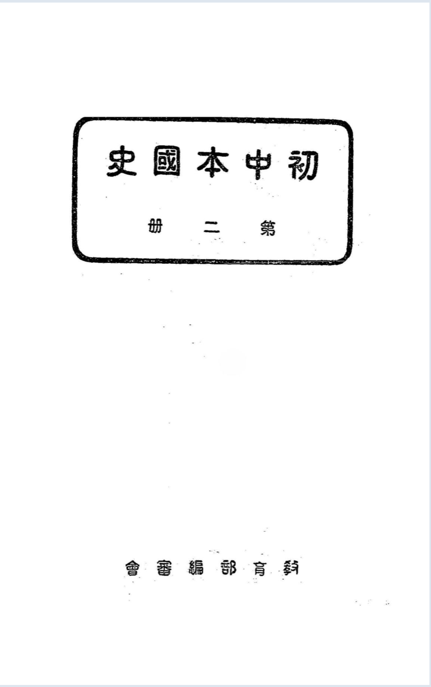

Occurrences
37
Exact minzu hits in this book
Findings / History / 鍒濅腑鏈浗鍙?/p>
 Textbook
This view contains all KWIC results for 姘戞棌 in this book, followed by the book's individual
frequency result.
This table lists every minzu KWIC result found in this textbook. Occurrences 37 Exact minzu hits in this book Analysis chars 45,399 Cleaned characters used as denominator Per 10k chars 8.15 Normalized frequency
鍒濅腑鏈浗鍙?/h1>
All KWIC Results in This Book
No.
Left context
Keyword
Right context
118
澶栦氦鐨勬鎵嬬浜屽崄浜岀珷鏄庝箣琛颁骸鑸囧ギ楝竴浜屼笁鏄庢湯娴佸瘒涔嬩簜鑸囨犯杌嶅叆闂滄槑瀹や箣濂鑸囨藩浜′竴浜屽叓绗簩鍗佷笁绔犱腑鑿瘄
姘戞棌
涔嬫嫇娈栨槑閯拰涓嬭タ绁ヤ腑鑿痏姘戞棌鐨勬捣澶栨畺姘戠洰娆?/td>
119
鑸囧ギ楝竴浜屼笁鏄庢湯娴佸瘒涔嬩簜鑸囨犯杌嶅叆闂滄槑瀹や箣濂鑸囨藩浜′竴浜屽叓绗簩鍗佷笁绔犱腑鑿瘄姘戞棌涔嬫嫇娈栨槑閯拰涓嬭タ绁ヤ腑鑿痏
姘戞棌
鐨勬捣澶栨畺姘戠洰娆?/td>
120
瀛稿強鍏惰畩闈╁厓鏄庢枃钘濅箣娴佽畩鍏冩槑鐨勫畻鏁庡厓鏄庣ぞ鏈冩И娉佷竴鍥涗簲绗簩鍗佷簲绔犱腑鍙ゅ彶涓嬫湡绲愯珫鍦栬〃鐩寗鑷Е鑷崇硸鍖楁柟濉炲
姘戞棌
娌块潻琛ㄤ竷涓€浜寍涓€涓夊攼|浠ｇ稉鐣ュ煙澶栧湒褰╄壊鍦栧攼涓櫄钘╅幁鍦栦簩涓夌敧鐩翠繚鑱栧鍞愭|鎯犱箣濉戝儚涓夊洓澶хЕ鏅晭娴佽涓瓅
121
璀峰簻浠ョ当娌绘紶|鍖?鍠畖浜庨兘璀峰簻浠ョ当娌绘饥|鍗楅€欐檪鍊?鏉卞寳鐨勫鍜屽涓逛竴涔熼兘鐩哥辜鑷ｆ湇鏂煎攼,鑷Е鑷冲攼鍖楁柟濉炲
姘戞棌
娌块潻琛ㄦ湞浠ｇЕ婕㈡澅婕㈡湯鍗楀寳鏈濋殝鍞愬垵鍞愭湯鏌旂劧姘戞棌鍖堝ゴ鍖堝ゴ楫崙绐佸帴绐佸帴鍥炵磭涓夈€佽タ鏂瑰叐婕互寰?鍓嶆都鑻荤Е涔熸浘缍?/td>
122
鏅傚€?鏉卞寳鐨勫鍜屽涓逛竴涔熼兘鐩哥辜鑷ｆ湇鏂煎攼,鑷Е鑷冲攼鍖楁柟濉炲姘戞棌娌块潻琛ㄦ湞浠ｇЕ婕㈡澅婕㈡湯鍗楀寳鏈濋殝鍞愬垵鍞愭湯鏌旂劧
姘戞棌
鍖堝ゴ鍖堝ゴ楫崙绐佸帴绐佸帴鍥炵磭涓夈€佽タ鏂瑰叐婕互寰?鍓嶆都鑻荤Е涔熸浘缍撲几灞曞湅鍔涙柤瑗垮煙;鍖楅瓘鐩涙檪瑗胯嚦娉㈡柉绛夊湅閮戒締鏈濊并
123
鐩婇兘绺?绉绘不閯?鑸婂湴鍦ㄤ粖灞辨澅鏉卞钩绺ｈタ鍖?闋樻湁浠婂北鏉辨澅鍖楅儴鍦般€傞殝鍞愬彶鍦板ぉ绠楀涔嬬櫦閬旈殝鍞愪簩浠?铻嶅悎鏂拌垔璜?/td>
姘戞棌
,浠ユ垚澶т竴绲辩殑甯濆湅;鑰屽攼鑷枊鍦嬩互寰?涓斿湅鍏ф湁鐧炬暩鍗佸勾(鍏厓鍏竴鍏珅涓冧簲浜旈暦鏅傛湡涔嬪お骞?鍥犳鏂煎琛撴柟闈?/td>
124
绗崄涓冪珷閬煎|閲戜箣鑸堣捣鑸囧皪鍛充箣闂滀總瀹嬪垵鍦嬮殯澶у嫝鑷簲|鑳′簜鑿緦,鑷抽殝鍞愮当涓€,鑰岀涓€鏈熸柊
姘戞棌
涔嬬祼鍚堝惪绲傘€傝嚜浜攟浠ｆ檪鏉卞寳鍙堟湁鏂版皯鏃忓礇璧?鏂兼槸绗簩鏈熸柊姘戞棌涔嬬祼鍚堝張闁嬪,棣栧厛鐖查伡,鐢辨槸鑰岄噾鑰屽厓浠ヨ嚦鏂?/td>
125
璧疯垏灏嶅懗涔嬮棞淇傚畫鍒濆湅闅涘ぇ鍕㈣嚜浜攟鑳′簜鑿緦,鑷抽殝鍞愮当涓€,鑰岀涓€鏈熸柊姘戞棌涔嬬祼鍚堝惪绲傘€傝嚜浜攟浠ｆ檪鏉卞寳鍙堟湁鏂?/td>
姘戞棌
宕涜捣,鏂兼槸绗簩鏈熸柊姘戞棌涔嬬祼鍚堝張闁嬪,棣栧厛鐖查伡,鐢辨槸鑰岄噾鑰屽厓浠ヨ嚦鏂兼犯,閮藉彲鎷箣鐖叉澅鍖楁皯鏃忋€傛墍浠ュ畫鍒濇檪鍊?/td>
126
澶у嫝鑷簲|鑳′簜鑿緦,鑷抽殝鍞愮当涓€,鑰岀涓€鏈熸柊姘戞棌涔嬬祼鍚堝惪绲傘€傝嚜浜攟浠ｆ檪鏉卞寳鍙堟湁鏂版皯鏃忓礇璧?鏂兼槸绗簩鏈熸柊
姘戞棌
涔嬬祼鍚堝張闁嬪,棣栧厛鐖查伡,鐢辨槸鑰岄噾鑰屽厓浠ヨ嚦鏂兼犯,閮藉彲鎷箣鐖叉澅鍖楁皯鏃忋€傛墍浠ュ畫鍒濇檪鍊?鍦ㄥ湅闅涗笂闁嬩竴鏂板眬闈?
127
浠ｆ檪鏉卞寳鍙堟湁鏂版皯鏃忓礇璧?鏂兼槸绗簩鏈熸柊姘戞棌涔嬬祼鍚堝張闁嬪,棣栧厛鐖查伡,鐢辨槸鑰岄噾鑰屽厓浠ヨ嚦鏂兼犯,閮藉彲鎷箣鐖叉澅鍖?/td>
姘戞棌
銆傛墍浠ュ畫鍒濇檪鍊?鍦ㄥ湅闅涗笂闁嬩竴鏂板眬闈?鐝惧湪鍏堟晬杩颁竴涓嬧嫯閬煎氨鏄涓?濂戜腹鏄鍗戞棌鐨勫緦瑁?鏈締鏈嶅爆鏂煎攼,鍞?/td>
128
浜嗕腑鍦嬬殑鏂囧寲,婕告鍚屽寲鏂兼饥
姘戞棌
,鐝惧垎杩板涓?涓€銆侀伡鐨勬饥鍖東閬兼湰娌掓湁鏂囧瓧,澶闃夸繚姗熸檪,绾旂敱婕汉鏁庝粬鍊戝鐪侀毞鏇哥殑绛嗙暙,閫犱綔濂戜腹鏂囧瓧銆?/td>
129
鏇?銆庘嫯姹濈瓑鑷辜鎯熺繏婕汉棰ㄤ織,涓嶇煡濂崇湠绱斿涔嬮ⅷ鑷虫柤鏂囧瓧瑾炶█,鎴栦笉閫氭泬,鏄繕鏈篃銆傘€忔彁鍟忚榛炰竴绗竴鏈熸柊
姘戞棌
绲愬悎,澶х磩闁嬪鏂肩敋楹芥檪鍊?瀹岀祼鏂肩敋楹芥檪鍊?绗簩鏈熸柊姘戞棌鐨勭祼鍚?闁嬪鏂肩敋楹芥檪鍊?绗簩鏈熸柊姘戞棌鐨勭祼鍚堥亱鍕?/td>
130
瑾炶█,鎴栦笉閫氭泬,鏄繕鏈篃銆傘€忔彁鍟忚榛炰竴绗竴鏈熸柊姘戞棌绲愬悎,澶х磩闁嬪鏂肩敋楹芥檪鍊?瀹岀祼鏂肩敋楹芥檪鍊?绗簩鏈熸柊
姘戞棌
鐨勭祼鍚?闁嬪鏂肩敋楹芥檪鍊?绗簩鏈熸柊姘戞棌鐨勭祼鍚堥亱鍕?鐩村埌鐢氶航鏅傚€欓倓鍦ㄩ€茶?浜岀暥鏅傛澅鍖楁皯鏃忔渶鍏堣捣渚嗙殑鏄偅涓€
131
涓€绗竴鏈熸柊姘戞棌绲愬悎,澶х磩闁嬪鏂肩敋楹芥檪鍊?瀹岀祼鏂肩敋楹芥檪鍊?绗簩鏈熸柊姘戞棌鐨勭祼鍚?闁嬪鏂肩敋楹芥檪鍊?绗簩鏈熸柊
姘戞棌
鐨勭祼鍚堥亱鍕?鐩村埌鐢氶航鏅傚€欓倓鍦ㄩ€茶?浜岀暥鏅傛澅鍖楁皯鏃忔渶鍏堣捣渚嗙殑鏄偅涓€鏃?閫欎竴鏃忓湪鐢氶航閰嬮暦鎵嬭绾斿己鐩涜捣渚?
132
楹芥檪鍊?绗簩鏈熸柊姘戞棌鐨勭祼鍚?闁嬪鏂肩敋楹芥檪鍊?绗簩鏈熸柊姘戞棌鐨勭祼鍚堥亱鍕?鐩村埌鐢氶航鏅傚€欓倓鍦ㄩ€茶?浜岀暥鏅傛澅鍖?/td>
姘戞棌
鏈€鍏堣捣渚嗙殑鏄偅涓€鏃?閫欎竴鏃忓湪鐢氶航閰嬮暦鎵嬭绾斿己鐩涜捣渚?寰屾檵鍜岄€欎竴鏃忔浘缍撶櫦鐢熶簡涓€绋敋楹藉浜ら棞淇?鐣舵檪瑗垮寳
133
鏈€鍏堣捣渚嗙殑鏄偅涓€鏃?閫欎竴鏃忓湪鐢氶航閰嬮暦鎵嬭绾斿己鐩涜捣渚?寰屾檵鍜岄€欎竴鏃忔浘缍撶櫦鐢熶簡涓€绋敋楹藉浜ら棞淇?鐣舵檪瑗垮寳
姘戞棌
閭勬湁閭ｄ竴鏃忓礇璧蜂簡閫欎竴鏃忎腑宕涜捣鍜屽畫灏嶉伡鐨勪氦娑?鐧肩敓浜?/td>
134
閬煎畫灏嶅鍙堟湁鎬庢ǎ鐨勪氦娑?鍥涗粊|瀹楁檪,瀹嬪拰閬煎帵鍙堟湁鎬庢ǎ鐨勪氦娑?绁瀨瀹楁檪鍛?浜斿畫閬煎皪鎶椾腑,鏉卞寳鍙堟湁鐢氶航鏂?/td>
姘戞棌
宕涜捣?瀹嬭捣鍒濇€庢ǎ鑱噾婊呴伡?閬煎叡鍌冲湅澶氬皯骞?閬间骸寰?瀹嬪緱浜嗕簺鐢氶航?姝ゅ緦閲戝張鎬庢ǎ鑸堝叺渚嗘敾瀹?瀹嬪け鏁楀埌鎬庢ǎ
135
寰屼笉寰╂澅椤х煟銆傝ɑ銆斾竴鐕曚含銆佸嵔浠婂寳浜€傛彁鍟忚榛炰竴瀹嬮噾灏嶅硻鏅?鍖楁柟鍙堟湁鎬庢ǎ鐨勪竴鍊嬫柊鑸?/td>
姘戞棌
?閫欐柊鑸堟皯鏃忔槸鎬庢ǎ渚嗙殑?浠栨€庢ǎ鍜岄噾鐧肩敓浜嗕粐闅?鐣舵檪浠栫珛浜嗕竴鍊嬬敋楹藉湅铏?浠栧埌鐢氶航鏅傚€?绾旂当涓€澶婕犲崡鍖?/td>
136
寰屼笉寰╂澅椤х煟銆傝ɑ銆斾竴鐕曚含銆佸嵔浠婂寳浜€傛彁鍟忚榛炰竴瀹嬮噾灏嶅硻鏅?鍖楁柟鍙堟湁鎬庢ǎ鐨勪竴鍊嬫柊鑸堟皯鏃?閫欐柊鑸?/td>
姘戞棌
鏄€庢ǎ渚嗙殑?浠栨€庢ǎ鍜岄噾鐧肩敓浜嗕粐闅?鐣舵檪浠栫珛浜嗕竴鍊嬬敋楹藉湅铏?浠栧埌鐢氶航鏅傚€?绾旂当涓€澶婕犲崡鍖?浜岃挋鍙ゆ垚鍚?/td>
137
鍒濅腑鏈湅鍙茬浜屽唽I02鍊?/td>
姘戞棌
鑻遍泟?瑭︾暐杩颁粬鍊戞姷鎶梶鍏冨叺鐨勭稉閬庛€傚崡|瀹嬪叡鍌冲湅澶氬皯骞?鍏│鐣ヨ堪钂欏彜|甯濆湅鐨勭増鍦?瑭︾暐杩拌挋鍙甯濆湅鍒嗘不
138
鍒濅腑鏈湅鍙茬浜屽唺绗簩鍗佷笁绔犱腑鑿瘄
姘戞棌
涔嬫嫇娈栨槑閯拰涓嬭タ|娲嬪厓鏈?璞倯绱涜捣,涓師澶т簜,涓簽浠ュ強娉鏂崡|淇勪竴甯剁殑鍥涙睏鍦?涔熷氨鍜屼腑|鍦嬫柗绲曞線渚?/td>
139
娓€佸嵔浠婃睙|铇囧お鍊墊绺ｇ€忔渤|鍙ｃ€備笁鍗犲煄銆佷粖娉?闋樺畨|鍗楃殑骞冲畾銆傚洓浠婂崡娲嬪強鍗板害绗簩绶ㄤ笅涓€绗簩鍗佷笁绔犱腑鑿?/td>
姘戞棌
涔嬫嫇娈?/td>
140
娌掓湁鍒楀叆,(鍏笁|浣涢綂銆佷篃鍙怠|娣嬮偊(Palembang,鍦ㄨ槆闁€|绛旇嚇鏉遍儴銆備粖灏欑埐瑭插扯鐨勯兘鏈冦€備腑鑿瘄
姘戞棌
鐨勬捣澶栨畺姘戝畫鍏冧互渚嗐€傛捣澶栬部鏄撴棩鐩?澶栬埗寰€渚嗘棩绻?鍚惧湅浜轰箣鍥犵稉鍟嗚€屾畺姘戞柤娴峰鐨勩€備篃鏃ョ泭澧炲銆傚叾涓挨浠ュ崡
141
浜烘皯涔嬩腑,鎴戝湅浜哄拰棣締浜虹殑娣风ó?銆傚張鍏冨垵鏇惧懡鍙插技寰佺埅|鍝?閬ⅷ鑸圭牬,鍏剁梾銆傚崚鐧鹃$鐣欓鏂奸夯钁夌敃浜?鎴?/td>
姘戞棌
鍥犱究绻佹畺鏂煎叾鍦般€傛洿鏈夋閬搢鏄?
142
閯瓅鍜屼笅瑗挎磱鐨勫嫊姗熸槸鎬庢ǎ鐨?浠栧垵娆″嚭鍦嬬殑琛岀▼鏄€庢ǎ鐨?浠栨浘缍撳埌閬庨偅涓€甯剁殑鍦版柟?绗簩绶ㄤ笅绗簩鍗佷笁绔犱腑鑿?/td>
姘戞棌
涔嬫嫇娈?/td>
143
鍏€傛儫鍦ㄨ繎涓栨湡鍒濆勾鏄庢湯涔嬩簨鑸囨湰鏈熷彶浜嬮爤鑱付鏁嶈堪鑰?鍓囦粛杩版柤鏈湡涓€傝尣灏囨湰鏇告墍杩颁箣涓彜鍙蹭笅鏈熷彶浜?鎷埐
姘戞棌
;鏀挎不銆佺ぞ鏈?鏂囧寲鍥涢爡,鎵艰杩板涓?涓€銆佹皯鏃忛殝鍞愭檪,婕㈡棌鍕㈠姏澶у嫉,鑷簲鑳′簜鑿互渚?绗簩绶ㄤ笅绗簩鍗佷簲绔?/td>
144
杩拌€?鍓囦粛杩版柤鏈湡涓€傝尣灏囨湰鏇告墍杩颁箣涓彜鍙蹭笅鏈熷彶浜?鎷埐姘戞棌;鏀挎不銆佺ぞ鏈?鏂囧寲鍥涢爡,鎵艰杩板涓?涓€銆?/td>
姘戞棌
闅嬪攼鏅?婕㈡棌鍕㈠姏澶у嫉,鑷簲鑳′簜鑿互渚?绗簩绶ㄤ笅绗簩鍗佷簲绔犱腑鍙ゅ彶涓嬫湡绲愯珫
145
鍒濅腑鏈湅鍙茬浜屽唽鎵€璎傜涓€鏈熸柊
姘戞棌
|瑗垮寳姘戞棌|涔嬬祼鍚堟柤鏄惪绲傚洓鑷充簲浠ｆ檪,鎵€璎傜浜屾湡鏂版皯鏃弢鏉卞寳姘戞棌|涔嬬祼鍚堝張闁嬪銆傜洿鑷虫湰鏈熸湯,鏉卞寳姘戞棌
146
鍒濅腑鏈湅鍙茬浜屽唽鎵€璎傜涓€鏈熸柊姘戞棌|瑗垮寳
姘戞棌
|涔嬬祼鍚堟柤鏄惪绲傚洓鑷充簲浠ｆ檪,鎵€璎傜浜屾湡鏂版皯鏃弢鏉卞寳姘戞棌|涔嬬祼鍚堝張闁嬪銆傜洿鑷虫湰鏈熸湯,鏉卞寳姘戞棌濮嬬祩閭勬槸鍜?/td>
147
鍒濅腑鏈湅鍙茬浜屽唽鎵€璎傜涓€鏈熸柊姘戞棌|瑗垮寳姘戞棌|涔嬬祼鍚堟柤鏄惪绲傚洓鑷充簲浠ｆ檪,鎵€璎傜浜屾湡鏂?/td>
姘戞棌
|鏉卞寳姘戞棌|涔嬬祼鍚堝張闁嬪銆傜洿鑷虫湰鏈熸湯,鏉卞寳姘戞棌濮嬬祩閭勬槸鍜屾饥鏃忔惉婕旂潃鎶楃埈鐨勫眬闈€傜稖鍏跺ぇ鍕㈣珫涔?鏈湡鍒濇湡
148
鍒濅腑鏈湅鍙茬浜屽唽鎵€璎傜涓€鏈熸柊姘戞棌|瑗垮寳姘戞棌|涔嬬祼鍚堟柤鏄惪绲傚洓鑷充簲浠ｆ檪,鎵€璎傜浜屾湡鏂版皯鏃弢鏉卞寳
姘戞棌
|涔嬬祼鍚堝張闁嬪銆傜洿鑷虫湰鏈熸湯,鏉卞寳姘戞棌濮嬬祩閭勬槸鍜屾饥鏃忔惉婕旂潃鎶楃埈鐨勫眬闈€傜稖鍏跺ぇ鍕㈣珫涔?鏈湡鍒濇湡,婕鏃忕殑
149
姘戞棌|瑗垮寳姘戞棌|涔嬬祼鍚堟柤鏄惪绲傚洓鑷充簲浠ｆ檪,鎵€璎傜浜屾湡鏂版皯鏃弢鏉卞寳姘戞棌|涔嬬祼鍚堝張闁嬪銆傜洿鑷虫湰鏈熸湯,鏉卞寳
姘戞棌
濮嬬祩閭勬槸鍜屾饥鏃忔惉婕旂潃鎶楃埈鐨勫眬闈€傜稖鍏跺ぇ鍕㈣珫涔?鏈湡鍒濇湡,婕鏃忕殑鍕㈠姏,鏉卞墖鎿村厖鍒版湞楫甠鍗婂扯鍗楅儴,鍗楀墖
150
閮?鍗楀墖鐧煎睍鍒板嵃搴︽敮鈰偅鍗婂扯鍜屽崡娲媩缇ｅ扯,瑗垮崡鐩撮仈娉㈡柉鍦版柟,鍖楀墖鍏ㄦ湁钂欏彜鍦般€備絾鑷簲浠ｄ互寰?鏂拌垐涔嬫澅鍖?/td>
姘戞棌
宕涜捣,婕㈡棌涓€灞堟柤閬奸噾,鍐嶅眻鏂艰挋鍙ゃ€傝挋鍙ゆ棌妤电洓鏅備唬,鑷タ浼瘄鍒╀簽浠ュ崡鍠滈Μ鎷夐泤浠欎互鍖?灏忎簽绱癬浜炲崐宄朵互鍙?/td>
151
閰夊寳
姘戞棌
鎶楄 ,缃部閭婄瘈搴︿娇,鏂兼槸鐢变腑澶泦娆婅浕鍖栬€岀埐鍦版柟鍒嗘瑠,鍗掕嚧钘╅幁璺嬫増婕旀垚浜攟浠ｅ崄鍦嬩箣灞€?瀹嬮憭鏂煎攼,鍔涜瑎涓?/td>
152
娆?鍗掕嚧钘╅幁璺嬫増婕旀垚浜攟浠ｅ崄鍦嬩箣灞€?瀹嬮憭鏂煎攼,鍔涜瑎涓ぎ闆嗘瑠,鐩殑闆栭仈,鐒跺皪鍏ф湁椁?灏嶅涓嶈冻,鍗掔埐鏉卞寳
姘戞棌
閬奸噾钂檤鍙ゆ墍澹撹揩銆傚緦渚嗚挋鍙ゆ棌涔嬪厓,閫犳垚涓€澶у笣鍦?鍙堝洜灏惧ぇ涓嶆帀,涓ぎ鐒″姏鎺у埗,涓嶄箙鍗充骸銆傚強钂欏彜鏃忛€€鑷冲
153
鏂囧寲鍜屽嵃搴︽枃鍖栧悎娴佺殑涓€鍊嬫檪鏈熴€傛彁鍟忚榛炰竴涓彜鍙蹭笅鏈?鎸囩殑鏄偅涓€娈垫湡闁?瑭︽摟鍏ㄤ腑鍙ゆ湡鐨勮捣瑷栧勾浠ｃ€備簩瑗垮寳
姘戞棌
鐨勭祼鍚堝埌鐢氶航鏅傚€欑簲鍚跨祩?鏉卞寳姘戞棌鐨勭祼鍚?鍒扮敋楹?/td>
154
鍟忚榛炰竴涓彜鍙蹭笅鏈?鎸囩殑鏄偅涓€娈垫湡闁?瑭︽摟鍏ㄤ腑鍙ゆ湡鐨勮捣瑷栧勾浠ｃ€備簩瑗垮寳姘戞棌鐨勭祼鍚堝埌鐢氶航鏅傚€欑簲鍚跨祩?鏉卞寳
姘戞棌
鐨勭祼鍚?鍒扮敋楹?/td>
Frequency Analysis for This Book
Subject History Textbook 鍒濅腑鏈浗鍙?/td> Keyword minzu (姘戞棌) Raw occurrences 37 Occurrences per 10,000 analysis characters 8.15